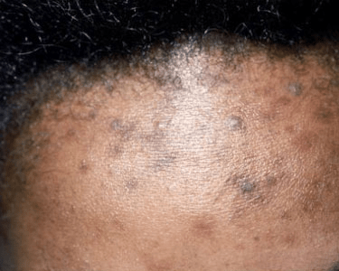

Post-inflammatory hyperpigmentation is darkening of the skin in an area of prior injury or skin disorder from increased pigment (melanin) left from the healing process. Sometimes the darkening may also be due to an iron pigment left behind when old red blood cells die. Acne is a common cause as well as any type of skin injury (scrapes, cuts, burns, insect bites, or chronic rubbing) or many other skin disorders, such as eczema (atopic dermatitis).

If pigmentation affects an exposed site, daily application of SPF 50+ broad-spectrum sunscreen is important to minimise darkening caused by UVR. Cosmetic camouflage can be used.
A variety of topical treatments are available to lighten/bleach hyperpigmented lesions in epidermal hypermelanosis. Varying degrees of success are achieved but combinations of the treatments below are usually required for significant improvement.
Chemical peels, laser treatments and intense pulsed light therapies (IPL)
may be helpful for epidermal pigmentation, but physical treatments may also
aggravate it by injuring the epidermis.
These treatments are not effective in dermal hypermelanosis.